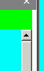
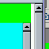

body要素の高さが閲覧領域をはみ出していないも関わらず、ウィンドウのスクロールバーが表示されてしまう。
別のページに用意してあります。
Moz1.0での表示（標準モード）
N6.2.3での表示（標準モード）
body要素の高さと閲覧領域の高さには関係がありません。閲覧領域のスクロールバーの表示は、閲覧領域をスクロールせずに全要素を表示できるかどうかに依存します。
例示ページの場合、N6.2.3ではスクロールバーが表示されますが、Moz1.0では表示されません。